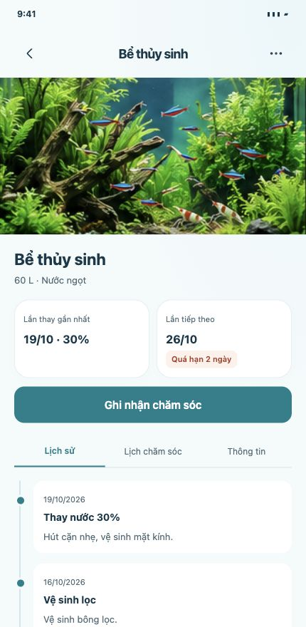
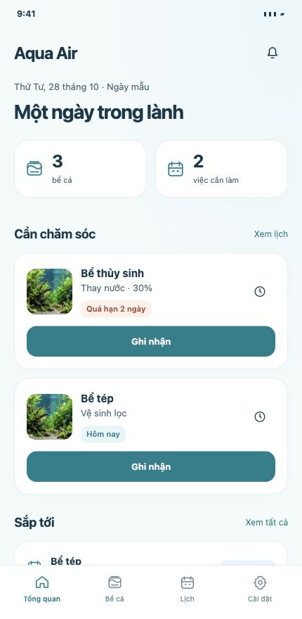
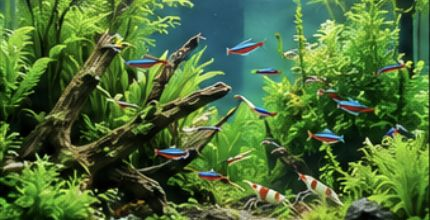
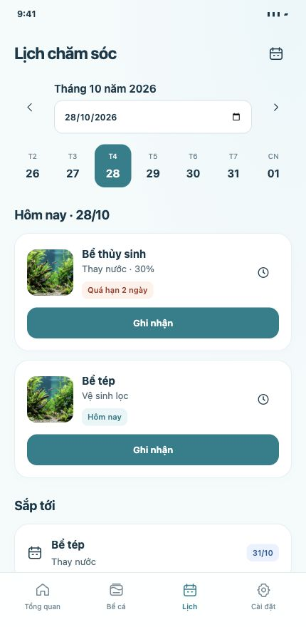

Start with the tank.
Photos, dimensions, water type and filters, together. Add a sump or canister and calculate capacity from the tank’s measurements.
Coming to iOS & Android
A little journal for your whole underwater world. Keep your tanks, water tests and care routine together, so you can get back to the view.
No account. No ads. Just your aquarium.


Works offline
Your data, on your device
11 languages
Exportable backups
Made for your little ecosystem
From the first fill to the next water change, give every tank a place of its own.

Photos, dimensions, water type and filters, together. Add a sump or canister and calculate capacity from the tank’s measurements.
Record pH, nutrients and other water tests with dates and notes. Add your own parameters and units when your test kit needs them.
Look back at care history and the latest result for each parameter. Your records stay with the tank, ready when you need them.
A rhythm, not a mental checklist
Water changes. Filter cleaning. A quick note after testing. Give everyday care a little structure.
See care tasks in one calendar and choose optional local reminders for the routines you want to keep.
Log completed water changes and see a monthly estimate of litres replaced and cost at your chosen water rate.
Keep history on your device and export an
.aquaair backup when you need a copy or move to a
new phone.

A quiet place for your records
Aqua Air works without an account, advertising or a developer-hosted cloud service. Your journal lives in local app storage. You choose when and where to export it.
How your data is handledAqua Air · Coming to iOS & Android
Something you’d love to see in your aquarium journal? Want to hear about the launch? Say hello to Truong.
Ask about the launchOpens your email app. No signup or automatic subscription.
App images are original design previews. Water-use estimates exclude top-ups, filter waste and fixed utility charges. Reminder delivery depends on your device settings.